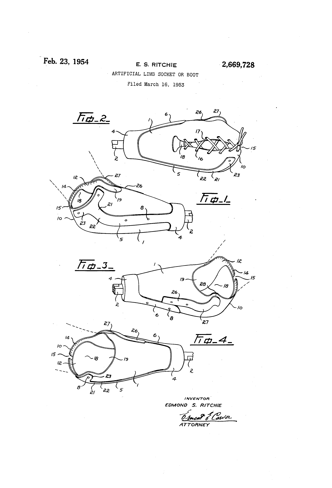
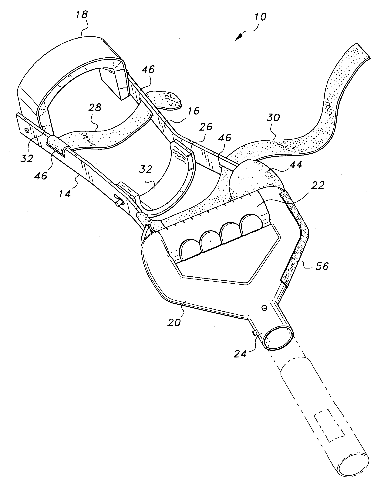
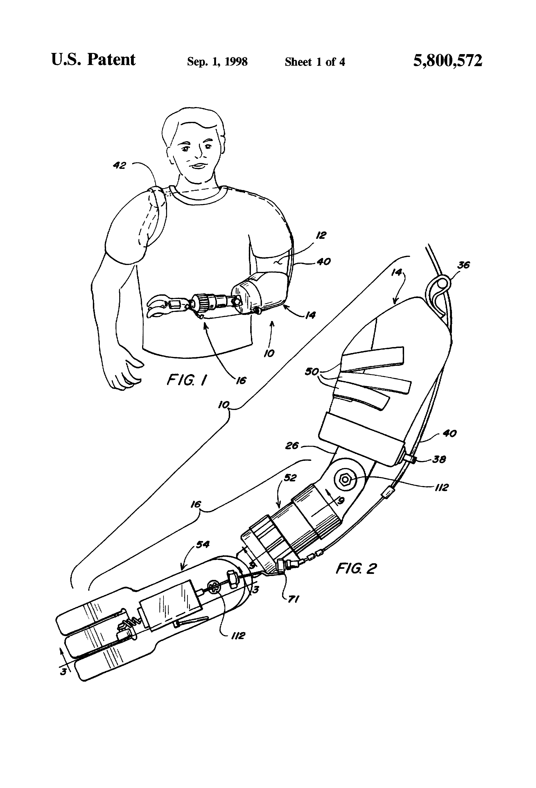

La situación en el Perú
Primeramente comenzaremos analizando los registros estadísticos con sobre el tema en el Perú. La última encuesta data del año 2012, esta puede ser encontrada en la página de la INEI, y lo más resaltante es el hecho de que un 0% de la población discapacida usa una prótesis de miembro superior. Esto refleja la nula importancia que tiene los prótesis en el Perú. No esta de más decir que el pobre nivel de registro no nos permite ha acceder a información más actualizada, la última encuesta data de hace 8 años, y esto dificulta el nuestro trabajo
Un poco de historia...
Evolución de prótesis a lo largo de la historia: Al paso de los años, las prótesis han evolucionado según las necesidades de los ocupantes de estas; volviéndoles mas cómodas, cosméticas y funcionales para una mayor satisfacción del discapacitado.
En el Museo Egipto en El Cairo se exhibe la que tal vez es la prótesis más antigua de la historia, que data entre los años de 950 AC y 710 AC, era el dedo gordo del pie de una madre egipcia echo de madera y cuero [1]. Entre los años 424 AC y 1 AC, en Italia se empezaron a hacer prótesis usando bronce y hierro con centro de madera para amputaciones debajo de la rodilla.
En el renacimiento, junto con las nuevas perspectivas del arte, filosofía, ciencia y medicina, pudo haber un gran cambio en la elaboración de las prótesis, estas se volvieron más cosméticas y cómodas para los amputados, echas en general de hierro, acero, cobre y madera [2].
En 1696, Pieter Verduyn desarrollo el primer modelo de prótesis sin bloqueo debajo de la rodilla; este sistema de sin bloquea se seguiría usando en el pasar de los años. En 1863, Dubois Parmlee invento una prótesis avanzada con sistema de succión, una rodilla policéntrica y un pie multi-articulado; este modelo se iría perfeccionando volviéndose mas liviano. En los modelos en la actualidad han evolucionado tomando distintos caminos; unos perfeccionando la estética, mientras que otros la funcionalidad.
Estos modelos estéticos llegan a ser muy realistas a simple vista y estos sirven para que la persona amputada no se sienta apartada o diferente al resto. En cuanto a los modelos funcionales estos han ido en una mejoría constante, contando con modelos mecánicos o de tiro, que son prótesis con dispositivos de apertura y cierre mediante cables y cintas de sujeción unidos al cuerpo que se abren o cierran a voluntad por tracción ejercida por el tensor. [3]
Además de los modelos mecánicos, también existen las prótesis mioeléctricas, estas funcionan gracias a la natural actividad eléctrica generada por los músculos que se contraen en el muñón, las cuales son amplificadas, procesadas y usadas para controlar el flujo de electricidad de una batería a un motor, que opera un miembro artificial o prótesis. [4]
Marco teórico
Próstesis de miembro superior:
Las prótesis para miembros superiores son mucho menos comunes que las de los inferiores. Para que una persona que haya sufrido una amputación de miembro superior y desee tener la mayor facilidad de usar una prótesis, debe hacerlo lo mas pronto posible. [4] Amputación de miembro superior: La amputación es la extirpación o resección de una parte o la totalidad de una extremidad través de una o más estructuras óseas [1]. En este caso trabajamos en la amputación de miembro superior, las cuales se pueden dividir en: • Amputación de los dedos • Amputación de la muñeca • Amputación del antebrazo • Desarticulación del codo • Amputación del brazo • Amputaciones del hombroExisten diversas complicaciones en la amputación, tales como: • Hematomas • Infecciones • Necrosis • Contracturas • Neuromas • Sensación del miembro fantasma
Causas de la amputación:
Las principales causas de la amputación se dividen en 3: • Trauma: o Es la mayor causa de amputación de el mundo. el trauma generalmente ocurre como el resultado de accidentes industriales, accidentes agrícolas o vehículos de motor accidentes, que incluyen automóviles, motocicletas y trenes. Trauma representa aproximadamente el 30% de las nuevas amputaciones. • Enfermedades: o La mayoría de las enfermedades que provocan la amputación son problemas vasculares, diabetes y tumores. • Malformación Congénita: o Estos casos ocurren cuando un niño nace con una anormalidad, ya sea una extremidad corta, malformada o sin extremidad en absoluto. [4]
Muñón Ideal
La forma del muñón varía paciente a paciente, según el procedimiento que se le haya realizado de acuerdo con lo que el doctor quería. Preferiblemente se corta en la unión de los tercio medio y distal. En caso de cortar en el tercio proximal, se busca dejar el codo intacto y un muñón de 3.5 -5 cm.
Algunas de las características deseadas para un muñón ideal son: • Forma cónica o semi-cónica. • Evitar que la piel este muy estirada ni demasiado laxa además de recubrir las extremidades óseas adecuadamente. • Buena movilidad y fuerza de palanca. • Poseer suficiente irrigación sanguínea. • Conservar los arcos articulares. • El nervio principal debe estar cortado por encima de la amputación. [2]
Avances de sockets en la actualidad
Liners:
El Liner es una cubierta protectora hecha de un material flexible y acolchado. Se coloca sobre el miembro residual (muñón) de forma tal que lo cubra, para que reduzca el movimiento y el roce entre la piel del usuario y el encaje protésico. [3] Están disponibles en 3 distintos tipos: Silicona (SIL), Poliuretano (PUR) o Copolímero (COP).Harmony 3:
El “Harmony P3” es un dispositivo usado para creas vacío en los sockets para que se pueda regular de acuerdo con el volumen del muñón y sus cambios.
Harmony 4:
El “Harmony P4”, además de generar vacío en el socket (Igual que el Harmony P3), la conexión directa a este también elimina cualquier escape.
Tipos de prótesis:
Existen diversos tipos de prótesis, entre estos están: • Amputación parcial o total de la mano: La amputación de la mano puede ser parcial o total, se puede clasificar en: o Amputación del pulgar o Amputación de uno o varios de los otros cuatro dedos o Niveles transmetacarpianos distal y proximal. • Prótesis para amputación del antebrazo. • Prótesis para amputación del brazo. • Prótesis para desarticulación del hombro. • Prótesis bioeléctricas del miembro superior. • Prótesis estética pasiva. [5]
¿Qué es un socket?
El socket es la parte de la prótesis que tiene contacto con la piel de amputado. Este, debido a donde esta posicionado, debe de ser cómodo, o en caso contrario el amputado será incapaz de usar adecuadamente la prótesis. Diferencia de socket de miembro superior con socket de miembro inferior En caso contrario a las prótesis de miembros inferiores; el socket en este caso no tiene el peso del cuerpo encima de él, por lo que el socket deberá tener presión sobre las áreas óseas al final de la extremidad, el codo y el hombro para que así no haya posibilidad que este caiga cuando la prótesis deba ejercer fuerza (Levantar algún objeto, tener el brazo relajado, etc) [4].
Alternativas del mercado
Revisando las actuales alternativas del mercado. Tenemos
Este patente es una de las más antiguas que se tiene
Este modelo, más modernp, es ajustado mediante el uso de correas
Este último tambien ees una opción
[1] Dina Spector. (2014). Artificial Limbs Have Gone Through An Amazing Evolution. 2018, de Business Insider Sitio web: https://www.businessinsider.com/the-evolution-of-prosthetic-technology-2014-8
[2] Kim M. Norton. (2007). A Brief History of Prosthetics. 2018, de Amputee Coalition Sitio web: http://www.cva.itesm.mx/biblioteca/pagina_con_formato_version_oct/apaweb.html
[3] Jens Muller. (.). Prótesis mecánica e híbridas. 2018, de Ortopedia Jens Muller Sitio web: Dubois Parmlee invented an advanced prosthesis with a suction socket, polycentric knee and multi-articulated foot.
[4] Ashok Muzumdar. (2004). Powered Upper Limb Prostheses. Springer-Verlag Berlin Heidelberg: Springer.
[5] Dr. Raidel La O Ramos y Lic. Alfredo D. Baryolo Cardoso. (2005). Rehabilitación del Amputado de Miembro Inferior . 2018, de Medicina de Rehabilitación Cubana Sitio web: http://www.sld.cu/galerias/pdf/sitios/rehabilitacion-bio/manual_de_amputados.pdf
[6] Dra. María Julia Ramos. (.). Rehabilitación del Amputado. 2018, de CNOT Cuba-RDA Sitio web: http://www.sld.cu/galerias/pdf/sitios/rehabilitacion/rehabilitacion_del_amputado.pdf
[7] Protésica Colombia. (2017). ¿Qué es un liner?. 2018, de Protésica Sitio web: http://protesica.com.co/que-es-un-liner/
[8] World Health Organization. (2004). The rehabilitation Of People With Amputations. Estados Unidos: MossRehab Hospital.
[9] Universidad de Valencia. (.). Prótesis. En Módulo Ortoprotésica (12). Valencia: Universidad de Valencia.